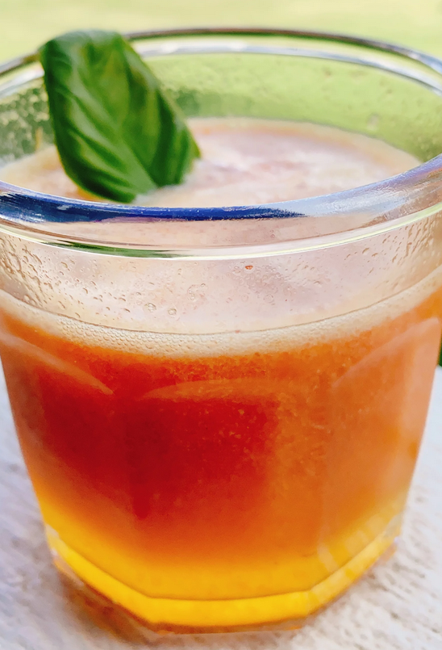

Sarah's Citrus Spritzer

Recipe description
I'm a Florida girl who is adjusting to the Oklahoma heat, and on days when I miss my home state (and need a refreshing drink) I turn to this incredible beverage. It's got a perfect balance of zing and sweet!
Ingredients
- 1.5 cups white sugar
- 0.75 cup water
- 2 tsp lemon zest
- 2 tsp orange zest
- 1 tbsp fresh basil leaves, or to taste
- 1 cup freshly squeezed lemon juice
- 0.75 cup freshly squeezed orange juice
- 12 oz. frozen strawberries, thawed
- ice, as needed
- 2l seltzer water, chilled
Steps
-
Bring sugar, water, lemon zest, orange zest, and basil to a boil in a saucepan over medium-high heat. Remove from heat and allow simple syrup to cool, 15 to 30 minutes.
-
Pour lemon juice and orange juice into a high-speed blender (such as a Vitamix®). Add strawberries and simple syrup. Blend on low speed (1), then slowly increase speed to high (10) and blend until pureed, about 45 seconds.
-
For each drink, fill an old fashioned glass with ice. Pour 1/4 cup strawberry puree over top and fill with seltzer water.
Other recipes